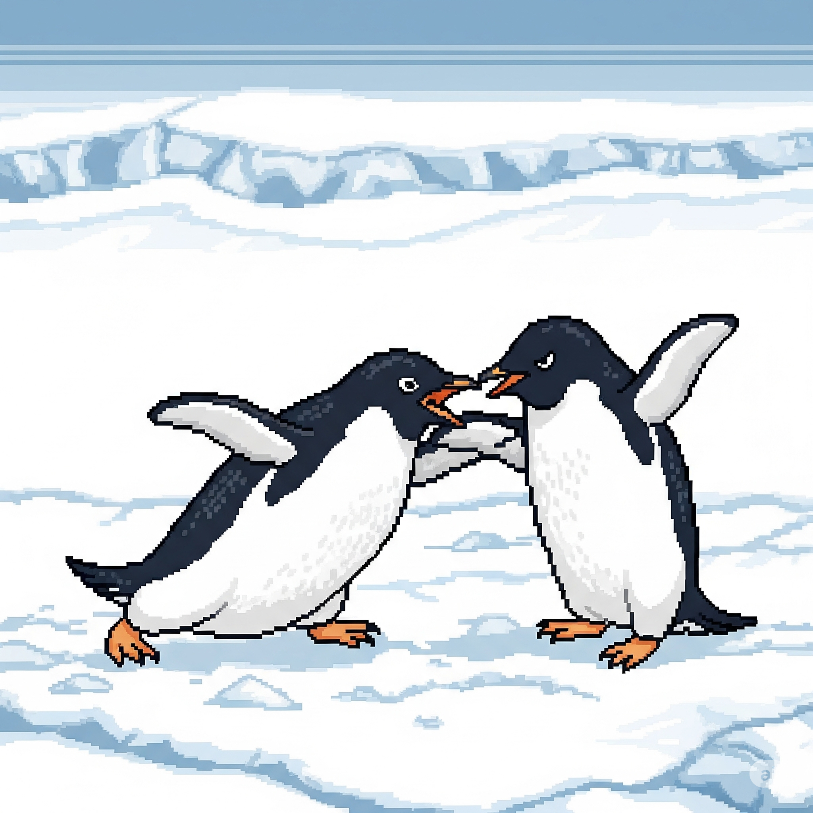
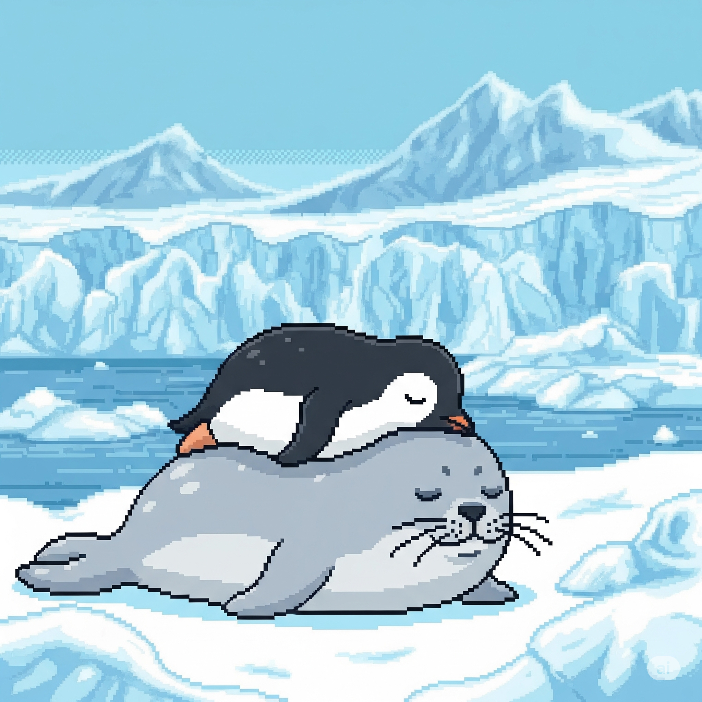
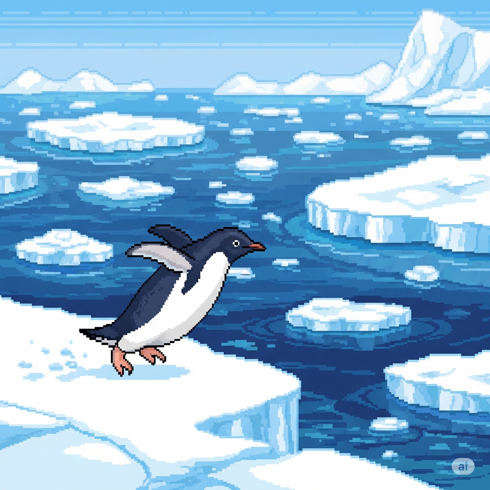
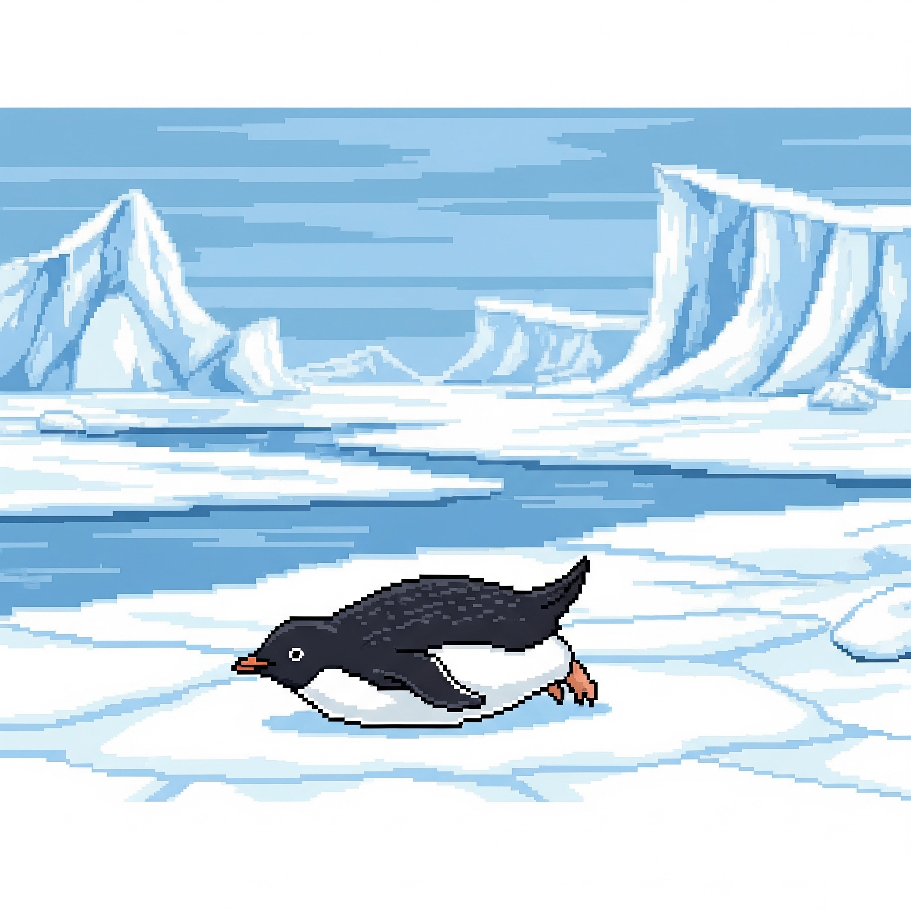

“企”思妙想

“鹅”立鸡群
企鹅是鸟，但不会飞！翅膀进化成了鳍状肢，让它们成为“鸟中游泳队”的C位担当！

天“南”地北
并非所有企鹅都住南极！很多生活在温带，甚至有住在赤道的“鹅”生赢家！

黑白“分明”
黑白“燕尾服”是伪装术！从上看融入深海，从下看融入天空，完美躲避天敌和猎物。

“盐”值担当
企鹅能喝海水，因为眼睛上有个腺体能把多余的盐分过滤掉，然后通过鼻子排出去！

一“夫”一妻
大多数企鹅都是忠诚的“一夫一妻”制，每年都会和同一个伴侣重逢，是动物界的模范夫妻！

“膝”下有黄金
企鹅走路摇摆不是因为腿短，它们其实有膝盖！只是大部分藏在身体里看不见而已。